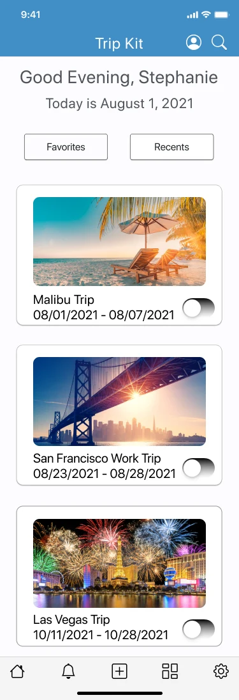
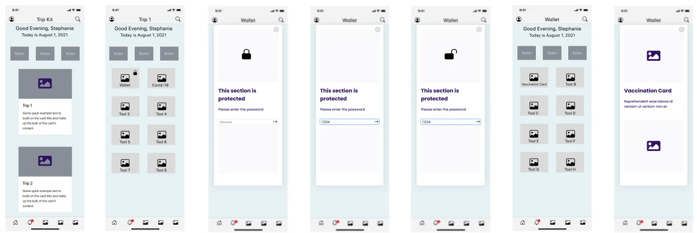
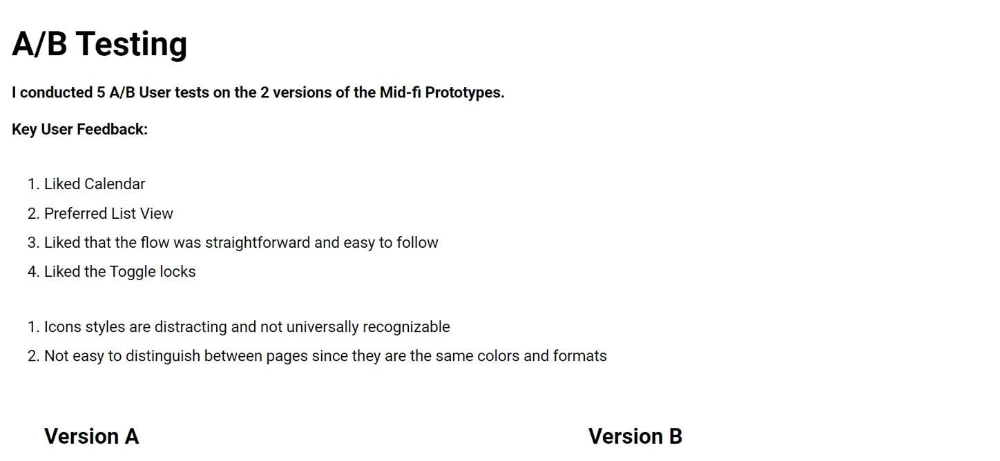

01 / Overview and challenge
Travel information was scattered. The stakes felt higher.
In 2021, travel planning meant managing reservations and itineraries alongside changing COVID-19 requirements. Interviews surfaced a practical problem: important information was scattered across email, apps, and websites, making it difficult to find at the moment it was needed. I explored a trip-centered mobile concept that could bring relevant resources together without treating sensitive documents like ordinary content.
How might one trip-centered experience make essential resources easier to find while introducing a clear boundary around personal travel documents?



02 / Research
Travel planners and wallets answered different questions
I conducted five discovery interviews and reviewed a range of products. Travel planners such as KAYAK, TripIt, and Wanderlog highlighted patterns in trip organization and retrieval. Apple Wallet and Cash App offered a separate lens on presenting portable items. The research narrowed the problem from an all-in-one travel app toward clear navigation and access to key documents.
The needs that surfaced
- Reduce the hunt. Travel details were buried in email and scattered across tools.
- Keep the trip in view. The trip could provide a starting point for finding related resources.
- Keep documents handy. Contactless access and offline availability came up as practical concerns.
03 / The key experience
The Wallet needed a different kind of friction
For ordinary trip resources, quick access was the goal. Presenting a personal vaccination document warranted a deliberate step. I focused the task flow on opening a document from the selected trip while making the protected state visible.
- Choose a trip
- Open Wallet
- Enter password
- Present document
- Exit to locked state


The password prompt and locked state were prototype interactions. They did not implement or verify authentication.
04 / Testing and refinement
Feedback made the navigation clearer
I tested the Wallet flow and used feedback from a comparison of two mid-fidelity versions to refine the design. Participants preferred the list layout and straightforward flow. Decorative icons were hard to recognize, and similar-looking screens were hard to tell apart.
What changed after testing
I kept the calendar context, Favorites and Recents, and a clear route through Wallet. I made icons and labels easier to recognize, differentiated screens, and gave lists a clearer hierarchy.
View the original A/B feedback summary


05 / Final design
Familiar navigation. Intentional document access.
The final prototype paired trip-specific navigation and recognizable lists with a deliberate path to a personal document. Calendar context, Favorites and Recents supported wayfinding; Wallet made access to sensitive content a distinct action.
- Start with the trip. A selected itinerary anchors related tools and travel information.
- Make options readable. Dates, familiar labels, and list navigation help people orient themselves.
- Signal the boundary. The Wallet prototype shows a password gate before the document.
06 / Reflection
The right friction depends on the task
Trip Kit taught me to distinguish unnecessary friction from an intentional access step. Familiar navigation helps travelers find everyday information quickly; presenting a personal document is a different task and calls for a more deliberate interaction.
Testing also showed how easily decorative icons and overly similar screens can undermine otherwise straightforward flows. The result was a more deliberate prototype and a clearer understanding of which design choices deserved to stay.
What I would test next: The Wallet journey under airport time pressure, with limited connectivity and different accessibility needs. Before release, I'd also validate the security and verification requirements.